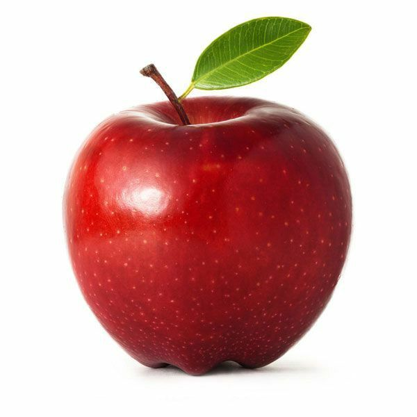

Fransiska Farica Augustin Giri

240712755 - Software Engineering
- Desain Interaksi
- Pemrograman Aplikasi Web
- Pengembangan Perangkat Lunak Agile
- Mengikuti kelas disemua matakuliah tanpa membolos
- Mengulik kembali mengenai HTML, CSS, dan JavaScript
- Membuat proyek proyek kecil
| Sesi | Senin | Selasa | Rabu | Kamis | Jumat |
|---|---|---|---|---|---|
| Sesi 1 | - | - | - | - | - | Sesi 2 | - | - | Pengembangan Perangkat Lunak Agile | - | Kewirausahaan | Sesi 3 | - | Etika Profesi | - | Pemrograman Aplikasi Web | Manajemen Proyek | Sesi 4 | - | - | - | Pengujian Perangkat Lunak | Desain Interaksi | Sesi 5 | - | - | - | - | - |